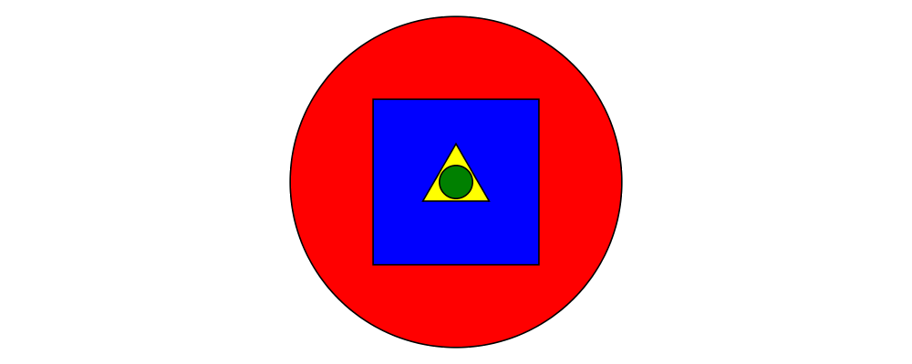
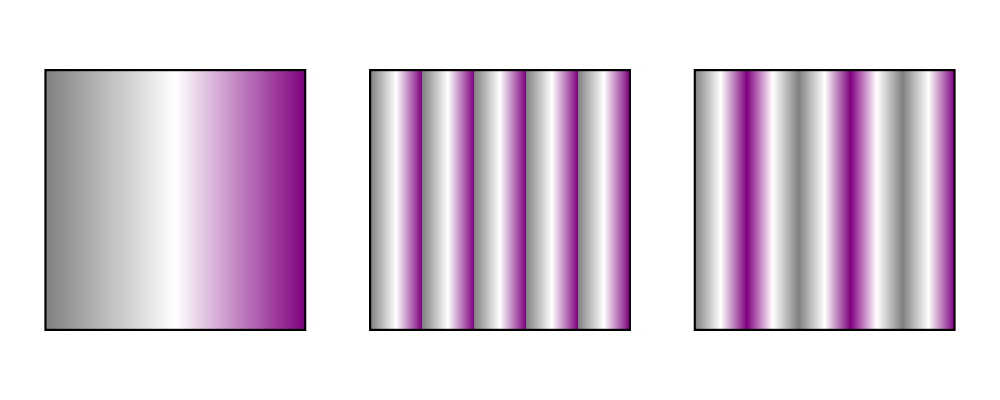
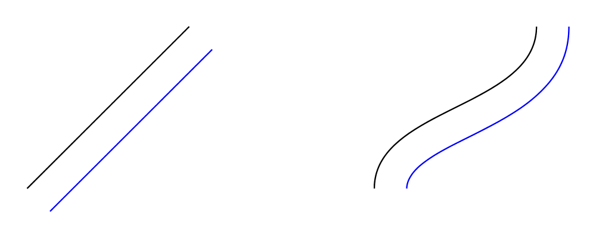

3.3 Composing diagrams
The diagrams framework is fundamentally compositional: complex
diagrams are created by combining simpler diagrams in various ways.
Many of the combination methods discussed in this section are defined
in Diagrams.Combinators.
Superimposing diagrams with atop
The most fundamental way to combine two diagrams is to place one on
top of the other with atop. The diagram d1 `atop` d2 is formed
by placing d1's local origin on top of d2's local origin; that is,
by identifying their local vector spaces.
> example = circle 1 `atop` square (sqrt 2)
As noted before, diagrams form a monoid with composition given by
superposition. atop is simply a synonym for mappend (or (<>)),
specialized to two dimensions.
This also means that a list of diagrams can be stacked with mconcat;
that is, mconcat [d1, d2, d3, ...] is the diagram with d1 on top
of d2 on top of d3 on top of...

> example = mconcat [ circle 0.1 # fc green
> , triangle 1 # scale 0.4 # fc yellow
> , square 1 # fc blue
> , circle 1 # fc red
> ]
Juxtaposing diagrams
Fundamentally, atop is actually the only way to compose diagrams;
however, there are a number of other combining methods (all ultimately
implemented in terms of atop) provided for convenience.
Two diagrams can be placed next to each other using beside. The
first argument to beside is a vector specifying a direction. The
second and third arguments are diagrams, which are placed next to each
other so that the vector points from the first diagram to the second.
> example = beside (r2 (20,30))
> (circle 1 # fc orange)
> (circle 1.5 # fc purple)
> # showOrigin
As can be seen from the above example, the length of the vector
makes no difference, only its direction is taken into account. (To
place diagrams at a certain fixed distance from each other, see
cat'.) As can also be seen, the local origin of the new, combined
diagram is the same as the local origin of the first diagram. This
makes beside v associative, so diagrams under beside v form a
semigroup. In fact, they form a monoid, since mempty is a left and
right identity for beside v, as can be seen in the example below:
> example = hsep 1 . map showOrigin
> $ [ d, mempty ||| d, d ||| mempty ]
> where d = square 1
In older versions of diagrams, the local origin of the combined
diagram was at the point of tangency between the two diagrams. To
recover the old behavior, simply perform an alignment on the first
diagram in the same direction as the argument to beside before
combining (see Alignment):
> example = beside (r2 (20,30))
> (circle 1 # fc orange # align (r2 (20,30)))
> (circle 1.5 # fc purple)
> # showOrigin
If you want to place two diagrams next to each other using the local
origin of the second diagram, you can use something like beside' =
flip . beside . negated, that is, use a vector in the opposite
direction and give the diagrams in the other order.
Since placing diagrams next to one another horizontally and vertically
is quite common, special combinators are provided for convenience.
(|||) and (===) are specializations of beside which juxtapose
diagrams in the \(x\)- and \(y\)-directions, respectively.
> d1 = circle 1 # fc red
> d2 = square 1 # fc blue
> example = (d1 ||| d2) ||| strutX 3 ||| ( d1
> ===
> d2 )
Juxtaposing without composing
Sometimes, one may wish to position a diagram next to another
diagram without actually composing them. This can be accomplished
with the juxtapose function. In particular, juxtapose v d1 d2
returns a modified version of d2 which has been translated to be
next to d1 in the direction of v. (In fact, beside itself is
implemented as a call to juxtapose followed by a call to (<>).)
> d1 = juxtapose unitX (square 1) (circle 1 # fc red)
> d2 = juxtapose (unitX ^+^ unitY) (square 1) (circle 1 # fc green)
> d3 = juxtapose unitY (square 1) (circle 1 # fc blue)
> example = circles ||| strutX 1 ||| (circles <> square 1)
> where circles = mconcat [d1, d2, d3]
See envelopes and local vector spaces for more information on what
"next to" means, and Envelopes for information on
functions available for manipulating envelopes. To learn about how
envelopes are implemented, see the core library reference.
Concatenating diagrams
We have already seen one way to combine a list of diagrams, using
mconcat to stack them. Several other methods for combining lists of
diagrams are also provided in Diagrams.Combinators.
The simplest method of combining multiple diagrams is position,
which takes a list of diagrams paired with points, and places the
local origin of each diagram at the indicated point.
> example = position (zip (map mkPoint [-3, -2.8 .. 3]) (repeat spot))
> where spot = circle 0.2 # fc black
> mkPoint x = p2 (x,x*x)
cat is an iterated version of beside, which takes a direction
vector and a list of diagrams, laying out the diagrams beside one
another in a row. The local origins of the subdiagrams will be placed
along a straight line in the direction of the given vector, and the
local origin of the first diagram in the list will be used as the
local origin of the final result.
> example = cat (r2 (2, -1)) (map p [3..8]) # showOrigin
> where p n = regPoly n 1
Semantically, cat v === foldr (beside v) mempty, although the actual
implementation of cat uses a more efficient balanced fold.
For more control over the way in which the diagrams are laid out, use
cat', a variant of cat which also takes a CatOpts record. See
the documentation for cat' and CatOpts to learn about the various
possibilities.
> example = cat' (r2 (2,-1)) (with & catMethod .~ Distrib & sep .~ 2 ) (map p [3..8])
> where p n = regPoly n 1 # scale (1 + fromIntegral n/4)
> # showOrigin
For convenience, Diagrams.TwoD.Combinators also provides
hcat, hcat', vcat, and vcat', variants of cat and cat'
which concatenate diagrams horizontally and vertically. In addition,
since using hcat' or vcat' with some separation tends to be
common, hsep and vsep are provided as short synonyms; that is,
hsep s = hcat' (with & sep .~ s), and similarly for vsep.
> example = hsep 0.2 (map square [0.3, 0.7 .. 2])
Finally, appends is like an iterated variant of beside, with the
important difference that multiple diagrams are placed next to a
single central diagram without reference to one another; simply
iterating beside causes each of the previously appended diagrams to
be taken into account when deciding where to place the next one. Of
course, appends is implemented in terms of juxtapose (see
Juxtaposing without composing).
> c = circle 1
> dirs = iterate (rotateBy (1/7)) unitX
> cdirs = zip dirs (replicate 7 c)
> example1 = appends c cdirs
> example2 = foldl (\a (v,b) -> beside v a b) c cdirs
> example = example1 ||| strutX 3 ||| example2
3.4 Modifying diagrams
Attributes and styles
Every diagram has a style which is an arbitrary collection of
attributes. This section will describe some of the default
attributes which are provided by the diagrams library and
recognized by most backends. However, you can easily create your own
attributes as well; for details, see the core library reference.
In many examples, you will see attributes applied to diagrams using
the (#) operator. Keep in mind that there is nothing special about
this operator as far as attributes are concerned. It is merely
backwards function application, which is used for attributes since it
often reads better to have the main diagram come first, followed by
modifications to its attributes. See Postfix transformation.
In general, inner attributes (that is, attributes applied earlier)
override outer ones. Note, however, that this is not a requirement.
Each attribute may define its own specific method for combining
multiple values. Again, see the core library reference for more
details.
Most of the attributes discussed in this section are defined in
Diagrams.TwoD.Attributes.
Texture
Two-dimensional diagrams can be filled and stroked with a Texture. A
Texture can be either a solid color, a linear gradient or a radial
gradient. Not all backends support gradients, in particular gradients are
supported by the SVG, Cairo, and Rasterific backends (see Rendering backends).
Future releases should also support patterns as textures. The data type
for a texture is
> data Texture = SC SomeColor | LG LGradient | RG RGradient
and Prism s _SC, _LG, _RG are provided for access.
Color and Opacity
The color used to stroke the paths can be set with the lc (line color)
function and the color used to fill them with the fc (fill color) function.
> example = circle 0.2 # lc purple # fc yellow
By default, diagrams use a black line color and a completely
transparent fill color.
Colors themselves are handled by the colour package, which
provides a large set of predefined color names as well as many more
sophisticated color operations; see its documentation for more
information. The colour package uses a different type for
colors with an alpha channel (i.e. transparency). To make use of
transparent colors you can use lcA and fcA. The palette package
provides additional sets of colors and algorithms for creating harmonious
color combinations.
> import Data.Colour (withOpacity)
> import Data.Colour.Palette.BrewerSet
>
> blues = map (blue `withOpacity`) [0.1, 0.2 .. 1.0]
> alphaEx = hcat' (with & catMethod .~ Distrib & sep .~ 1 )
> (zipWith fcA blues (repeat (circle 1)))
>
> colors = brewerSet Pastel1 9
> paletteEx = hsep 0.3 (zipWith fc colors (repeat (rect 0.5 1 # lw none)))
>
> example = vsep 1 ([alphaEx, paletteEx] # map centerX)
Another source of predefined color names is the
Diagrams.Color.XKCD module, containing over 900 common names for
colors as determined by the XKCD color name survey.
> import Diagrams.Color.XKCD
>
> colors = [booger, poisonGreen, cinnamon, petrol, vibrantPurple]
> example = hcat (zipWith fcA colors (repeat (circle 1 # lw none)))
Transparency can also be tweaked with the Opacity attribute, which
sets the opacity/transparency of a diagram as a whole. Applying
opacity p to a diagram, where p is a value between 0 and 1,
results in a diagram p times as opaque.
> s c = square 1 # fc c
> reds = (s darkred ||| s red) === (s pink ||| s indianred)
> example = hsep 1 . take 4 . iterate (opacity 0.7) $ reds
Some backends support setting fill and stroke opacities separately,
with fillOpacity and strokeOpacity.
Grouped opacity can be applied using the opacityGroup annotation,
which is currently supported by the diagrams-svg,
diagrams-pgf, and (as of version 1.3.1) the
diagrams-rasterific backends. In the example to the left
below, the section where the two transparent circles overlap is
darker, just as if e.g. two circles made out of colored cellophane
were overlapped. If this documentation was compiled with a backend
that supports opacity grouping (e.g. Rasterific or SVG), then the
example on the right shows two transparent circles without a darker
section where they overlap—the transparency has been applied to the
group of diagrams as a whole, as if it were a single piece of
cellophane cut in the shape of overlapping circles.
> cir = circle 1 # lw none # fc red
> overlap = (cir <> cir # translateX 1)
>
> example = hsep 1 [ overlap # opacity 0.3, overlap # opacityGroup 0.3 ]
> # centerX
> <> rect 9 0.1 # fc lightblue # lw none
To "set the background color" of a diagram, use the bg
function—which does not actually set any attributes, but simply
superimposes the diagram on top of a bounding rectangle of the given
color. The bgFrame function is similar but the background is expanded
to frame the diagram by a specified amount.
> t = regPoly 3 1
>
> example = hsep 0.2 [t, t # bg orange, t # bgFrame 0.1 orange]
Linear Gradients
A linear gradient must have a list of color stops, a starting point, an ending point,
a transformation and a spread method. Color stops are pairs of (color, fraction) where
the fraction is usually between 0 and 1 that are mapped onto the start and end
points. The starting point and endping point are
specified in local coordinates. Typically the transformation starts as the identity
transform mempty and records any transformations that are applied to the object
using the gradient. The spread method defines how space beyond the starting and
ending points should be handled: GradPad will fill the space with the final stop
color, GradRepeat will restart the gradient, and GradReflect will restart the
gradient but with the stops reversed. This is the data type for a linear gradient:
> data LGradient n = LGradient
> { _lGradStops :: [GradientStop n]
> , _lGradStart :: P2 n,
> , _lGradEnd :: P2 n,
> , _lGradTrans :: T2 n,
> , _lGradSpreadMethod :: SpreadMethod
> }
Lenses are provided to access the record fields. In addition the
functions mkStops taking a list of triples (color, fraction,
opacity) and mkLinearGradient which takes a list of stops, a start
and end point, and a spread method and creates a Texture are
provided for convenience. In this example we demonstrate how to make
linear gradients with the mkLinearGradient functions and how to
adjust it using the lenses and prisms.

> stops = mkStops [(gray, 0, 1), (white, 0.5, 1), (purple, 1, 1)]
> gradient = mkLinearGradient stops ((-0.5) ^& 0) (0.5 ^& 0) GradPad
> sq1 = square 1 # fillTexture gradient
> sq2 = square 1 # fillTexture (gradient & _LG . lGradSpreadMethod .~ GradRepeat
> & _LG . lGradStart .~ (-0.1) ^& 0
> & _LG . lGradEnd .~ 0.1 ^& 0
> )
> sq3 = square 1 # fillTexture (gradient & _LG . lGradSpreadMethod .~ GradReflect
> & _LG . lGradStart .~ (-0.1) ^& 0
> & _LG . lGradEnd .~ 0.1 ^& 0
> )
>
> example = hsep 0.25 [sq1, sq2, sq3]
Here we apply the gradient to the stroke only and give it starting and
ending points towards the corners.
> stops = mkStops [(teal, 0, 1), (orange, 1, 1)]
> gradient = mkLinearGradient stops ((-1) ^& (-1)) (1 ^& 1) GradPad
> example = rect 3 1 # lineTexture gradient # lwO 15 # fc black # opacity 0.75
Radial Gradients
Radial gradients are similar, only they begin at the perimeter of an inner cirlce and
end at the perimeter of an outer circle.
> data RGradient n = RGradient
> { _rGradStops :: [GradientStop n]
> , _rGradCenter0 :: P2 n
> , _rGradRadius0 :: n
> , _rGradCenter1 :: P2 n
> , _rGradRadius1 :: n
> , _rGradTrans :: T2 n
> , _rGradSpreadMethod :: SpreadMethod }
Where radius and center 0 are for the inner circle, and 1 for the outer circle.
In this example we place the inner circle off center and place a circle filled
with the radial gradient on top of a rectangle filled with a linear gradient
to create a 3D effect.
> radial = mkRadialGradient (mkStops [(white,0,1), (black,1,1)])
> ((-0.15) ^& (0.15)) 0.06 (0 ^& 0) 0.5
> GradPad
>
> linear = mkLinearGradient (mkStops [(black,0,1), (white,1,1)])
> (0 ^& (-0.5)) (0 ^& 0.5)
> GradPad
>
> example = circle 0.35 # fillTexture radial # lw none
> <> rect 2 1 # fillTexture linear # lw none
Line width
Line width is actually more subtle than you might think. Suppose you
create a diagram consisting of a square, and another square twice as
large next to it (using scale 2). How should they be drawn? Should
the lines be the same width, or should the larger square use a line
twice as thick? (Note that similar questions also come up when
considering the dashing style used to draw some shapes—should the
size of the dashes scale with transformations applied to the shapes,
or not?) diagrams allows the user to decide, using Measure Double
values to specify things like line width (see Measurement units).
In many situations, it is desirable to have lines drawn in a uniform
way, regardless of any scaling applied to shapes. This is what
happens with line widths measured in global, normalized or
output units, as in the following example:
> example = hcat
> [ square 1
> , square 1 # scale 2
> , circle 1 # scaleX 3
> ]
> # dashingN [0.03,0.03] 0
> # lwN 0.01
For line widths that scale along with a diagram, use local; in this
case line widths will be scaled in proportion to the geometeric
average of the scaling transformations applied to the diagram.
The LineWidth attribute is used to alter the width with which
paths are stroked. The most general functions that can be used to set
the line width are lineWidth and its synonym lw, which take an
argument of type Measure V2 n. Since typing things like lineWidth
(normalized 0.01) is cumbersome, there are also shortcuts provided:
lwG, lwN, lwO, and lwL all take an argument of type Double
and wrap it in global, normalized, output and local,
respectively.
There are also predefined Measure n values with intuitive names,
namely, ultraThin, veryThin, thin, medium, thick,
veryThick, ultraThick, and none (the default is medium), which
should often suffice for setting the line width.
> line = strokeT . fromOffsets $ [unitX]
> example = vcat' (with & sep .~ 0.1)
> [line # lw w | w <- [ultraThin, veryThin, thin,
> medium, thick, veryThick, ultraThick]]
In the above example, there is no discernible difference between
ultraThin and veryThin (depending on the resolution of your
display you may not see any difference with thin either); these
names all describe normalized measurements with a physical lower
bound, so the physical width of the resulting lines depends on the
physical size of the rendered diagram. At larger rendering sizes the
differences between the smaller widths become apparent.
Note that line width does not affect the envelope of diagrams at all.
To stroke a line "internally", turning it into a Path value
enclosing the stroked area (which does contribute to the envelope),
you can use one of the functions described in the section Offsets of
segments, trails, and paths.
Other line parameters
Many rendering backends provide some control over the particular way
in which lines are drawn. Currently, diagrams provides built-in
support for three aspects of line drawing:
lineCap sets the LineCap style.
lineJoin sets the LineJoin style.
dashing allows for drawing dashed lines with arbitrary dashing
patterns.
> path = fromVertices (map p2 [(0,0), (1,0.3), (2,0), (2.2,0.3)]) # lwO 20
> example = center . vcat' (with & sep .~ 0.1 )
> $ map (path #)
> [ lineCap LineCapButt . lineJoin LineJoinMiter
> , lineCap LineCapRound . lineJoin LineJoinRound
> , lineCap LineCapSquare . lineJoin LineJoinBevel
> , dashingN [0.03,0.06,0.09,0.03] 0
> ]
The HasStyle class
Functions such as fc, lc, lw, and lineCap do not take only
diagrams as arguments. They take any type which is an instance of the
HasStyle type class. Of course, diagrams themselves are an
instance.
However, the Style type is also an instance. This is useful in
writing functions which offer the caller flexible control over the
style of generated diagrams. The general pattern is to take a Style
(or several) as an argument, then apply it to a diagram along with
some default attributes:
> myFun style = d # applyStyle style # lc red # ...
> where d = ...
This way, any attributes provided by the user in the style argument
will override the default attributes specified afterwards.
To call myFun, a user can construct a Style by starting with an
empty style (mempty, since Style is an instance of Monoid) and
applying the desired attributes:
> foo = myFun (mempty # fontSize (local 2) # lw none # fc green)
If the type T is an instance of HasStyle, then [T] is also.
This means that you can apply styles uniformly to entire lists of
diagrams at once, which occasionally comes in handy, for example, to
assign a default attribute to all diagrams in a list which do not
already have one:
> example = hcat $
> [circle 1, square 2, triangle 2 # fc yellow, hexagon 1] # fc blue
Likewise, there are HasStyle instances for pairs, Maps, Sets,
and functions.
Static attributes
Diagrams can also have "static attributes" which are applied at a
specific node in the tree representing a diagram. Currently, only
two static attributes are provided:
Hyperlinks are supported only by the SVG backend. To turn a diagram
into a hyperlink, use the href function.
Transparency grouping via the opacityGroup function is supported
only by the SVG, PGF and (as of 1.3) Rasterific backends; see Color and Opacity.
More static attributes (for example, node IDs) and wider backend
support may be added in future versions.
2D Transformations
Any diagram can be transformed by applying arbitrary affine
transformations to it. Affine transformations include linear
transformations (rotation, scaling, reflection, shears—anything
which leaves the origin fixed and sends lines to lines) as well as
translations. In the simplified case of the real line, an affine
transformation is any function of the form \(f(x) = mx + b\).
Generalizing to \(d\) dimensions, an affine transformation is a
vector function of the form \(f(\mathbf{v}) = \mathbf{M}\mathbf{v} +
\mathbf{b}\), where \(\mathbf{M}\) is a \(d \times d\)
matrix representing a linear transformation, and \(\mathbf{b}\) is
a \(d\)-dimensional vector representing a translation. More
general, non-affine transformations, including projective
transformations, are referred to in diagrams as Deformations.
Diagrams.TwoD.Transform defines a number of common affine
transformations in two-dimensional space. (To construct
transformations more directly, see Diagrams.Core.Transform.)
Every transformation comes in two variants, a noun form and a verb
form. For example, there are two functions for scaling along the
\(x\)-axis, scalingX and scaleX. The noun form (e.g.
scalingX) constructs a Transformation value, which can then be
stored in a data structure, passed as an argument, combined with other
transformations, etc., and ultimately applied to a diagram (or other
Transformable value) with the transform function. The verb form
directly applies the transformation. The verb form is much more
common (and the documentation below will only discuss verb forms), but
getting one's hands on a first-class Transformation value can
occasionally be useful.
Both the verb and noun variants of transformations are monoids, and
can be composed with (<>). However, the results are quite distinct,
as shown in this example.
> ell = text "L" <> square 1 # lw none
> alpha = 45 @@ deg
>
> dia1 = ell # translateX 2 # rotate alpha
> dia2 = ell # ( rotate alpha <> translateX 2 )
> dia3 = ell # transform ( rotation alpha <> translationX 2 )
>
> example =
> hsep 2
> [ (dia1 <> orig)
> , vrule 4
> , (dia2 <> orig)
> , vrule 4
> , (dia3 <> orig)
> ]
> where
> orig = circle 0.05 # fc red # lw none
dia1 is the intended result: a character L translated along the X axis,
and then rotated 45 degrees around the origin.
dia2 shows the result of naively composing the verb versions of
the transformations: a superposition of a rotated L and a
translated L. To understand this, consider that (rotate alpha)
is a function, and functions as monoid instances (Monoid m =>
Monoid (a -> m)) are composed as (f <> g) x = f x <> g x. To
quote the Typeclassopedia: if a is a Monoid, then so is the
function type e -> a for any e; in particular, g `mappend`
h is the function which applies both g and h to its argument
and then combines the results using the underlying Monoid instance
for a.
Hence ell # ( rotate alpha <> translateX 2 ) is
the same as the superposition of two diagrams: rotate alpha ell <>
translateX 2 ell.
dia3 shows how the noun versions can be composed (using the
Monoid instance for Transformation) with the intended result.
Rotation
Use rotate to rotate a diagram counterclockwise by a given angle
about the origin. Since rotate takes an Angle n, you must specify an
angle unit, such as rotate (80 @@ deg). In the common case that you
wish to rotate by an angle specified as a certain fraction of a
circle, like rotate (1/8 @@ turn), you can use rotateBy
instead. rotateBy takes a Double argument expressing the number of
turns, so in this example you would only have to write rotateBy
(1/8).
You can also use rotateAbout in the case that you want to rotate
about some point other than the origin.
> eff = text "F" <> square 1 # lw none
> rs = map rotateBy [1/7, 2/7 .. 6/7]
> example = hcat . map (eff #) $ rs
Scaling and reflection
Scaling by a given factor is accomplished with scale (which scales
uniformly in all directions), scaleX (which scales along the \(x\)-axis
only), or scaleY (which scales along the \(y\)-axis only). All of these
can be used both for enlarging (with a factor greater than one) and
shrinking (with a factor less than one). Using a negative factor
results in a reflection (in the case of scaleX and scaleY) or a
180-degree rotation (in the case of scale).
> eff = text "F" <> square 1 # lw none
> ts = [ scale (1/2), id, scale 2, scaleX 2, scaleY 2
> , scale (-1), scaleX (-1), scaleY (-1)
> ]
>
> example = hcat . map (eff #) $ ts
Scaling by zero is forbidden. Let us never speak of it again.
For convenience, reflectX and reflectY perform reflection along
the \(x\)- and \(y\)-axes, respectively. Their names can be
confusing (does reflectX reflect along the \(x\)-axis or
across the \(x\)-axis?) but you can just remember that
reflectX = scaleX (-1), and similarly for reflectY; that is,
reflectQ affects Q-coordinates.
reflectXY swaps the \(x\)- and \(y\)-coordinates, that is,
it reflects across the line \(y = x\). To reflect across any
other line, use reflectAbout.
> eff = text "F" <> square 1 # lw none
> example = eff
> <> reflectAbout (p2 (0.2,0.2)) (rotateBy (-1/10) xDir) eff
Translation
Translation is achieved with translate, translateX, and
translateY, which should be self-explanatory.
Conjugation
Diagrams.Transform also exports some useful transformation
utilities which are not specific to two dimensions. The conjugate
function performs conjugation: conjugate t1 t2 == inv t1 <> t2 <>
t1, that is, it performs t1, then t2, then undoes t1.
underT performs a transformation using conjugation. It takes as
arguments a function f as well as a transformation to conjugate by,
and produces a function which performs the transformation, then f,
then the inverse of the transformation. For example, scaling by a
factor of 2 along the diagonal line \(y = x\) can be accomplished
thus:
> eff = text "F" <> square 1 # lw none
> example = (scaleX 2 `underT` rotation (-1/8 @@ turn)) eff
The letter F is first rotated so that the desired scaling axis lies
along the \(x\)-axis; then scaleX is performed; then it is rotated back
to its original position.
Note that reflectAbout and rotateAbout are implemented using
underT.
Some functions for producing Isos (from the lens library)
are also provided, which serve a similar purpose to conjugate and
underT, but can be more convenient when working in a lens-y
style. For example, the transformed function takes a
Transformation and yields an Iso between untransformed and
transformed things. movedTo, movedFrom, and translated work
similarly, but specific to translation.
Deformations
The affine transformations represented by Transformation include the
most commonly used transformations, but occasionally other sorts are
useful. Non-affine transformations are represented by the
Deformation type. The design is quite similar to that of
Transformation. A Deformation is parameterized by the vector
spaces over which it acts: most generally, it may send objects in one
vector space to objects in another. There is a Deformable type
class with a function deform, which applies a Deformation to a
Deformable value. There is also a function deform' which takes an
extra tolerance parameter; applying deformations usually involves
approximation.
> wibble :: Deformation V2 V2 Double
> wibble = Deformation $ \p ->
> ((p^._x) + 0.3 * cos ((p ^. _y) * tau)) ^& (p ^. _y)
> -- perturb x-coordinates by the cosine of the y-coordinate
>
> circles :: Path V2 Double
> circles = mconcat . map circle $ [3, 2.6, 2.2]
>
> example :: Diagram B
> example = circles # deform' 0.0001 wibble # strokeP
> # fillRule EvenOdd # fc purple # frame 1
Because the deform function is so general, type signatures are often
required on both its inputs and results, as in the example above;
otherwise ambiguous type errors are likely to result.
Deformation v v n is a Monoid for any vector space v n. (In
general, Deformation u v n maps objects with vector space u to
ones with vector space v.) New deformations can be formed by
composing two deformations. The composition of an affine
transformation with a Deformation is also a Deformation.
asDeformation converts a Transformation to an equivalent
Deformation, "forgetting" the inverse and other extra information
which distinguishes affine transformations.
The very general nature of deformations prevents certain types
from being Deformable. Because not every Deformation is
invertible, diagrams cannot be deformed. In general, for two points
\(p\) and \(q\), and a deformation \(D\), there may be no
deformation \(D_v\) such that \(Dp - Dq = D_v(p-q)\). For
this reason, only points and concretely located types are deformable.
Finally, segments are not deformable because the image of the segment
may not be representable by a single segment. The Deformable
instances for trails and paths will approximate each segment by
several segments as necessary. Points, Located trails, and paths
are all deformable.
Because approximation and subdivision are required for many
Deformable instances, the type class provides a function deform',
which takes the approximation accuracy as its first argument. For
trails and paths, deform (without a prime) calls deform' with an
error limit of 0.01 times the object's size.
Diagrams.TwoD.Deform defines parallel and perspective
projections along the principal axes in 2 dimensions. The below
example projects the vertices of a square orthogonally onto the
\(x\)- and \(y\)-axes, and also using a perspective projection
onto the line \(x = 1\).
> sq = unitSquare # rotateBy (1/17) # translate (3 ^& 2) :: Path V2 Double
> sqPts = concat $ pathVertices sq --XXX dont forget to change back to pathPoints
> marks = repeat . lw none $ circle 0.05
> spots c pts = atPoints pts (marks # fc c)
> connectPoints pts1 pts2
> = zipWith (~~) pts1 pts2
> # mconcat
> # dashingL [0.1, 0.1] 0
> example =
> mconcat
> [ spots blue sqPts
> , strokeP sq
> , spots green (map (deform parallelX0) sqPts)
> , spots green (map (deform parallelY0) sqPts)
> , spots green (map (deform perspectiveX1) sqPts)
> , connectPoints sqPts (map (deform parallelX0) sqPts)
> , connectPoints sqPts (map (deform parallelY0) sqPts)
> , connectPoints sqPts (repeat origin)
> ]
Alignment
Since diagrams are always combined with respect to their local
origins, moving a diagram's local origin affects the way it combines
with others. The position of a diagram's local origin is referred to
as its alignment.
The functions moveOriginBy and moveOriginTo are provided for
explicitly moving a diagram's origin, by an absolute amount and to an
absolute location, respectively. moveOriginBy and translate are
actually dual, in the sense that
moveOriginBy v === translate (negated v).
This duality comes about since translate moves a diagram with
respect to its origin, whereas moveOriginBy moves the origin with
respect to the diagram. Both are provided so that you can use
whichever one corresponds to the most natural point of view in a given
situation, without having to worry about inserting calls to negated.
Often, however, one wishes to move a diagram's origin with respect to
its "boundary". Here, boundary usually refers to the diagram's
envelope or trace, with envelope being the default (see Envelopes
and Traces for more information). To this end, some general tools
are provided in Diagrams.Align, and specialized 2D-specific
ones by Diagrams.TwoD.Align.
Functions like alignT (align Top) and alignBR (align Bottom Right)
move the local origin to the edge of the envelope:
> s = square 1 # fc yellow
> example = hsep 0.5
> [ s # showOrigin
> , s # alignT # showOrigin
> , s # alignBR # showOrigin
> ]
There are two things to note about the above example. First, notice
how alignT and alignBR move the local origin of the square in the
way you would expect. Second, notice that when placed "next to" each
other using the (|||) operator (here implicitly via hsep), the
squares are placed so that their local origins fall on a horizontal
line.
Functions like alignY allow finer control over the alignment. In
the below example, the origin is moved to a series of locations
interpolating between the bottom and top of the square:
> s = square 1 # fc yellow
> example = hcat . map showOrigin
> $ zipWith alignY [-1, -0.8 .. 1] (repeat s)
To center an object along an axis we provide the functions centerX
and centerY. An object can be simultaneously centered along both axes
(actually along all of its basis vectors) using the center function
(or centerXY in the specific case of two dimensions).
The align functions have sister functions like snugL and snugX
that work the same way as alignL and alignX. The difference is
that the snug class of functions use the trace as the boundary
instead of the envelope. For example, here we want to snug a convex
shape (the orange triangle) next to a concave shape (the blue
polygon):
> import Diagrams.TwoD.Align
>
> concave = polygon ( with & polyType .~ PolyPolar [a, b, b, b]
> [ 0.25,1,1,1,1] & polyOrient .~ NoOrient )
> # fc blue # lw none
> where
> a = 1/8 @@ turn
> b = 1/4 @@ turn
>
> convex = polygon (with & polyType .~ PolyPolar [a,b] [0.25, 1, 1]
> & polyOrient .~ NoOrient)
> # fc orange # lw none
> where
> a = 1/8 @@ turn
> b = 3/4 @@ turn
>
> aligned = (concave # center # alignR # showOrigin)
> <> (convex # center # alignL # showOrigin)
>
> snugged = (concave # center # snugR # showOrigin)
> <> (convex # center # snugL # showOrigin)
>
> example = aligned ||| strutX 0.5 ||| snugged
The snugR function moves the origin of the blue polygon to the
rightmost edge of its trace in the diagram on the right, whereas in
the left diagram the alignR function puts it at the edge of the
envelope.
Aligned composition
Sometimes, it is desirable to compose some diagrams according to a
certain alignment, but without affecting their local origins. The
composeAligned function can be used for this purpose. It takes as
arguments an alignment function (such as alignT or snugL), a
composition function of type [Diagram] -> Diagram, and produces a
new composition function which works by first aligning the diagrams
before composing them.
> example = (hsep 2 # composeAligned alignT) (map circle [5,1,3,2])
> # showOrigin
3.5 Trails and paths
Trails and paths are some of the most fundamental tools in
diagrams. They can be used not only directly to draw things, but
also as guides to help create and position other diagrams.
For additional practice and a more "hands-on" experience learning
about trails and paths, see the trails and paths tutorial.
Segments
The most basic component of trails and paths is a Segment, which is
some sort of primitive path from one point to another. Segments are
translationally invariant; that is, they have no inherent location,
and applying a translation to a segment has no effect (however, other
sorts of transformations, such as rotations and scales, have the
effect you would expect). In other words, a segment is not a way to
get from some particular point A to another point B; it is a way to
get from wherever you currently happen to be to somewhere else.
Currently, diagrams supports two types of segment, defined in
Diagrams.Segment:
A linear segment is simply a straight line, defined by an offset
from its beginning point to its end point; you can construct one
using straight.
A Bézier segment is a cubic curve defined by an offset from its
beginning to its end, along with two control points; you can
construct one using bezier3 (or bézier3, if you are feeling
snobby). An example is shown below, with the endpoints shown in red
and the control points in blue. Bézier curves always start off
from the beginning point heading towards the first control point,
and end up at the final point heading away from the last control
point. That is, in any drawing of a Bézier curve like the one
below, the curve will be tangent to the two dotted lines.
> illustrateBézier c1 c2 x2
> = endpt
> <> endpt # translate x2
> <> ctrlpt # translate c1
> <> ctrlpt # translate c2
> <> l1
> <> l2
> <> fromSegments [bézier3 c1 c2 x2]
> where
> dashed = dashingN [0.03,0.03] 0
> endpt = circle 0.05 # fc red # lw none
> ctrlpt = circle 0.05 # fc blue # lw none
> l1 = fromOffsets [c1] # dashed
> l2 = fromOffsets [x2 ^-^ c2] # translate c2 # dashed
>
> x2 = r2 (3,-1) :: V2 Double -- endpoint
> [c1,c2] = map r2 [(1,2), (3,0)] -- control points
>
> example = illustrateBézier c1 c2 x2
Independently of the two types of segments explained above, segments
can be either closed or open. A closed segment has a fixed
endpoint relative to its start. An open segment, on the other hand,
has an endpoint determined by its context; open segments are used to
implement loops (explained in the Trails section below). Most
users should have no need to work with open segments. (For that
matter, most users will have no need to work directly with segments at
all.)
If you look in the Diagrams.Segment module, you will see quite
a bit of other stuff related to the implementation of trails
(SegMeasure and so on); this is explained in more detail in the
section Trail and path implementation details.
Functions from the Diagrams.TwoD.Curvature module can be used
to compute the curvature of segments at various points. In future
releases of diagrams this may be extended to tools for finding the
curvature of trails and paths.
Trails
Trails are defined in Diagrams.Trail. Informally, you can
think of trails as lists of segments laid end-to-end. Since segments
are translation-invariant, so are trails. More formally, the
semantics of a trail is a continuous (though not necessarily
differentiable) function from the real interval \([0,1]\) to
vectors in some vector space. This section serves as a reference on
trails; for a more hands-on introduction, refer to the Trail and path
tutorial.
There are two types of trail:
A loop, with a type like Trail' Loop v n, is a trail which forms
a "closed loop", ending at the same place where it started.
Loops in 2D can be filled, as in the example above.
A line, with a type like Trail' Line v n, is a trail which does
not form a closed loop, that is, it starts in one place and ends
in another.
Actually, a line can in fact happen to end in the same place where
it starts, but even so it is still not considered closed. Lines
have no inside and outside, and are never filled.
Lines are never filled, even when they happen to start and end in
the same place!
Finally, the type Trail can contain either a line or a loop.
The most important thing to understand about lines, loops, and trails
is how to convert between them.
To convert from a line or a loop to a trail, use wrapLine or
wrapLoop (or wrapTrail, if you don't know or care whether the
parameter is a line or loop).
To convert from a loop to a line, use cutLoop. This results in a
line which just so happens to end where it starts.
To convert from a line to a loop, there are two choices:
closeLine adds a new linear segment from the end to the start of
the line.
> almostClosed :: Trail' Line V2 Double
> almostClosed = fromOffsets $ (map r2
> [(2, -1), (-3, -0.5), (-2, 1), (1, 0.5)])
>
> example = pad 1.1 . center . fc orange . hsep 1
> $ [ almostClosed # strokeLine
> , almostClosed # closeLine # strokeLoop
> ]
glueLine simply modifies the endpoint of the final segment to be
the start of the line. This is most often useful if you have a
line which you know just so happens to end where it starts;
calling closeLine in such a case would result in the addition of
a gratuitous length-zero segment.
Lines form a monoid under concatenation. For example, below we create
a two-segment line called spoke and then construct a starburst
path by concatenating a number of rotated copies. Note how we call
glueLine to turn the starburst into a closed loop, so that we can
fill it (lines cannot be filled). strokeLoop turns a loop into a
diagram, with the start of the loop at the local origin. (There are
also analogous functions strokeLine and strokeTrail.)
> spoke :: Trail' Line V2 Double
> spoke = fromOffsets . map r2 $ [(1,3), (1,-3)]
>
> burst :: Trail' Loop V2 Double
> burst = glueLine . mconcat . take 13 . iterate (rotateBy (-1/13)) $ spoke
>
> example = strokeLoop burst # fc yellow # lw thick # lc orange
For convenience, there is also a monoid instance for Trail based on
the instance for lines: any loops are first cut with cutLine, and
the results concatenated. Typically this would be used in a situation
where you know that all your trails actually contain lines.
Loops, on the other hand, have no monoid instance.
To construct a line, loop, or trail, you can use one of the following:
fromOffsets takes a list of vectors, and turns each one into a
linear segment.
> theLine = fromOffsets (iterateN 5 (rotateBy (1/20)) unitX)
> example = theLine # strokeLine
> # lc blue # lw thick # center # pad 1.1
fromVertices takes a list of vertices, generating linear segments
between them.
> vertices = map p2 $ [(x,y) | x <- [0,0.2 .. 2], y <- [0,1]]
> example = fromVertices vertices # strokeLine
> # lc red # center # pad 1.1
(~~) creates a simple linear trail between two points.
cubicSpline creates a smooth curve passing through a given list of
points; it is described in more detail in the section on Splines.
> vertices = map p2 . init $ [(x,y) | x <- [0,0.5 .. 2], y <- [0,0.2]]
> theLine = cubicSpline False vertices
> example = mconcat (iterateN 6 (rotateBy (-1/6)) theLine)
> # glueLine # strokeLoop
> # lc green # lw veryThick # fc aqua # center # pad 1.1
bspline creates a smooth curve controlled by a given list of
points; it is also described in more detail in the section on
Splines.
> pts = map p2 (zip [0 .. 8] (cycle [0, 1]))
> example = mconcat
> [ bspline pts
> , mconcat $ map (place (circle 0.1 # fc blue # lw none)) pts
> ]
fromSegments takes an explicit list of Segments, which can
occasionally be useful if, say, you want to generate some Bézier
curves and assemble them into a trail.
All the above functions construct loops by first constructing a line
and then calling glueLine (see also the below section on
TrailLike).
If you look at the types of these functions, you will note that they
do not, in fact, return just Trails: they actually return any type
which is an instance of TrailLike, which includes lines, loops,
Trails, Paths (to be covered in an upcoming section), Diagrams,
lists of points, and any of these wrapped in Located (see below).
See the TrailLike section for more on the TrailLike class.
For details on other functions provided for manipulating trails, see
the documentation for Diagrams.Trail. One other function worth
mentioning is explodeTrail, which turns each segment in a trail into
its own individual Path. This is useful when you want to construct
a trail but then do different things with its individual segments.
For example, we could construct the same starburst as above but color
the edges individually:
> spoke :: Trail V2 Double
> spoke = fromOffsets . map r2 $ [(1,3), (1,-3)]
>
> burst = mconcat . take 13 . iterate (rotateBy (-1/13)) $ spoke
>
> colors = cycle [aqua, orange, deeppink, blueviolet, crimson, darkgreen]
>
> example = lw thick
> . mconcat
> . zipWith lc colors
> . map strokeLocTrail . explodeTrail
> $ burst `at` origin
(If we wanted to fill the starburst with yellow as before, we would
have to separately draw another copy of the trail with a line width of
zero and fill that; this is left as an exercise for the reader.)
Located
Something of type Located a consists, essentially, of a value of
type a paired with a point. In this way, Located serves to
transform translation-invariant things (such as Segments or
Trails) into things with a fixed location. A Located Trail is a
Trail where we have picked a concrete location for its starting
point, and so on.
The module Diagrams.Located defines the Located type and
utilities for working with it:
at is used to construct Located values, and is designed to be
used infix, like someTrail `at` somePoint.
viewLoc, unLoc, and loc can be used to project out the
components of a Located value.
mapLoc can be used to apply a function to the value of type a
inside a value of type Located a. Note that Located is not a
Functor, since it is not possible to change the contained type
arbitrarily: mapLoc does not change the location, and the vector
space associated to the type a must therefore remain the same.
Much of the utility of having a concrete type for the Located
concept (rather than just passing around values paired with points)
lies in the type class instances we can give to Located:
HasOrigin: translating a Located a simply translates the
associated point, leaving the value of type a unaffected.
Transformable: only the linear component of transformations are
applied to the wrapped value (whereas the entire transformation is
applied to the location).
Enveloped: the envelope of a Located a is the envelope of the
contained a, translated to the stored location (and similarly for
Traced).
The TrailLike instance is also useful; see TrailLike.
Paths
A Path, also defined in Diagrams.Path, is a (possibly empty)
collection of Located Trails. Paths of a single trail can be
constructed using the same functions described in the previous
section: fromSegments, fromOffsets, fromVertices, (~~), and
cubicSpline, bspline.
Paths also form a Monoid, but the binary operation is
superposition (just like that of diagrams). Paths with
multiple components can be used, for example, to create shapes with
holes:
> ring :: Path V2 Double
> ring = circle 3 <> (circle 2 # reversePath)
>
> example = ring # strokeP # fc purple
See the section on Fill rules for more information.
strokePath (alias strokeP) turns a path into a diagram, just as
strokeTrail turns a trail into a diagram. (In fact, strokeTrail
really works by first turning the trail into a path and then calling
strokePath on the result.)
explodePath, similar to explodeTrail, turns the segments of a path
into individual paths. Since a path is a collection of trails, each
of which is a sequence of segments, explodePath actually returns a
list of lists of paths.
For information on other path manipulation functions such as
pathFromTrail, pathFromLocTrail, pathPoints, pathVertices,
pathOffsets, scalePath, and reversePath, see the Haddock
documentation in Diagrams.Path.
Vertices vs points
A vertex of a trail or path is defined as a sharp corner, i.e. a
non-differentiable point. This is (mostly) independent of the
implementation of trails and paths. A point, on the other hand,
refers to the join point between two Segments, which is specific to
the implementation of trails as collections of Segments.
For computing vertices, there are a number of functions like
pathVertices, trailVertices, lineVertices, and loopVertices.
Each of these also has a primed variant, like trailVertices', which
takes an extra argument specifying a tolerance: in practice, where
two segments join, we need some tolerance expressing how close the
slopes of the segments must be in order to consider the join point
differentiable (and hence not a vertex).
For computing points, there are variants pathPoints, trailPoints,
linePoints, and loopPoints. However, these are (intentionally)
not exported from Diagrams.Prelude. To use them, import
Diagrams.Path or Diagrams.Trail.
In the example below, you can see that a circle has no vertices,
whereas it has four points (exposing the implementation detail that a
circle is constructed out of four Bézier segments; you should not rely
on this!). On the other hand, a hexagon has the six vertices you
would expect.
> import Diagrams.Trail -- for trailPoints
>
> visPoints :: [P2 Double] -> Diagram B
> visPoints pts = atPoints pts (repeat (circle 0.05 # lw none # fc blue))
>
> example = hsep 0.5
> [ circle 1 `beneath` visPoints (trailVertices (circle 1))
> , circle 1 `beneath` visPoints (trailPoints (circle 1))
> , hexagon 1 `beneath` visPoints (trailVertices (hexagon 1))
> ]
Stroking trails and paths
The strokeTrail and strokePath functions, which turn trails and paths into
diagrams respectively, have already been mentioned; they are defined
in Diagrams.TwoD.Path. Both also have primed variants,
strokeTrail' and strokePath', which take a record of StrokeOpts.
Currently, StrokeOpts has two fields:
vertexNames takes a list of lists of names, and zips each list
with a component of the path, creating point subdiagrams (using
pointDiagram) associated with the names. This means that the
names can be used to later refer to the locations of the path
vertices (see Named subdiagrams). In the case of strokeTrail',
only the first list is used.
By default, vertexNames is an empty list.
queryFillRule specifies the fill rule (see Fill rules) used to
determine which points are inside the diagram, for the purposes of
its query (see Using queries). Note that it does not affect
how the diagram is actually drawn; for that, use the fillRule
function. (This is not exactly a feature, but for various technical
reasons it is not at all obvious how to have this field actually
affect both the query and the rendering of the diagram.)
By default, queryFillRule is set to Winding.
There is also a method stroke, which takes as input any type which
is an instance of ToPath, a type class with a single method:
> toPath :: (Metric (V t), OrderedField (N t))
> => t -> Path (V t) (N t)
Calling stroke can sometimes produce errors complaining of an
ambiguous type, which can happen if stroke is called on something
which is itself polymorphic (e.g. because it can be any instance of
TrailLike). The solution in this case is to use type-specific
stroking functions like strokePath, strokeTrail, strokeLocLine,
etc. See the ToPath reference for more information.
Offsets of segments, trails, and paths
Given a segment and an offset radius \(r\) we can make an offset segment
that is the distance \(r\) from the original segment. More specifically,
you can think of the offset as the curve traced by the end of a vector of
length \(r\) perpendicular to the original curve. This vector goes on the
right of the curve for a positive radius and on the left for a negative radius.

> import Diagrams.TwoD.Offset
>
> example :: Diagram B
> example = hsep 1 $ map f
> [ straight p
> , bézier3 (r2 (0,0.5)) (r2 (1,0.5)) p
> ]
> where
> p = r2 (1,1)
> f :: Segment Closed V2 Double -> Diagram B
> f s = fromSegments [s]
> <> offsetSegment 0.1 0.2 s # strokeLocTrail # lc blue
Animate tracing an offset?
For a straight segment this will clearly be a parallel straight line with
\(r\) as the distance between the lines. For an counter-clockwise arc of
radius \(R\) the offset will be an arc with the same center, start and end
angles, and radius \(r+R\). Cubic segments present a problem, however.
The offset of a cubic Bézier curve could be a higher degree curve. To
accommodate this we approximate the offset with a sequence of segments. We
now have enough details to write the type for offsetSegment.
> offsetSegment :: Double -> Double -> Segment Closed V2 Double -> Located (Trail V2 Double)
The first parameter to offsetSegment is an epsilon factor \(\epsilon\).
When the radius is multiplied by \(\epsilon\) we get the maximum allowed
distance a point on the approximate offset can differ from the true offset.
The final parameters are the radius and the segment. The result is a located
trail. It is located because the offset's start will be distance \(r\)
away from the segment start which is the origin.
If we can offset a segment we naturally will want to extend this to offset a
trail. A first approach might be to simply map offsetSegment over the
segments of a trail. But we quickly notice that if the trail has any sharp
corners, the offset will be disconnected!
> import Diagrams.TwoD.Offset
>
> locatedTrailSegments t = zipWith at (trailSegments (unLoc t)) (trailVertices t)
>
> bindLoc f = join' . mapLoc f
> where
> join' x = let (p,a) = viewLoc x in translate (p .-. origin) a
>
> offsetTrailNaive :: Double -> Double -> Trail V2 Double -> Path V2 Double
> offsetTrailNaive e r = mconcat . map (pathFromLocTrail . bindLoc (offsetSegment e r))
> . locatedTrailSegments . (`at` origin)
>
> example :: Diagram B
> example = (p # strokeTrail <> offsetTrailNaive 0.1 0.3 p # stroke # lc blue)
> # lw thick
> where p = fromVertices . map p2 $ [(0,0), (1,0.3), (2,0), (2.2,0.3)]
First let's consider the outside corner where the adjacent offset segments do
not cross. If we consider sweeping a perpendicular vector along the original
trail we have a problem when we get to a corner. It is not clear what
perpendicular means for that point. One solution is to take all points
distance \(r\) from the corner point. This puts a circle around the corner
of radius \(r\). Better is to just take the portion of that circle that
transitions from what is perpendicular at the end of the first segment to what
is perpendicular at the start of the next. We could also choose to join together
offset segments in other sensible ways. For the choice of join we have the
_offsetJoin field in the OffsetOpts record.
> import Diagrams.TwoD.Offset
>
> example :: Diagram B
> example = (p # strokeTrail <> o # strokeLocTrail # lc blue)
> # lw thick
> where
> p = fromVertices . map p2 $ [(0,0), (1,0.3), (2,0), (2.2,0.3)]
> o = offsetTrail' (with & offsetJoin .~ LineJoinRound) 0.3 p
Inside corners are handled in a way that is consistent with outside corners, but
this yields a result that is most likely undesirable. Future versions of Diagrams
will include the ability to clip inside corners with several options for how to
do the clipping.
Update after implementing clipping.
There are other interesting ways we can join segments. We implement the standard
line join styles and will also in the future provide the ability to specify a custom
join.
> import Diagrams.TwoD.Offset
>
> example :: Diagram B
> example = hsep 0.5 $ map f [LineJoinMiter, LineJoinRound, LineJoinBevel]
> where
> f s = p # strokeTrail <> (offsetTrail' (with & offsetJoin .~ s) 0.3 p # strokeLocTrail # lc blue)
> p = fromVertices . map p2 $ [(0,0), (1,0), (0.5,0.7)]
The LineJoinMiter style in particular can use more information to dictate how
long a miter join can extend. A sharp corner can have a miter join that is an
unbounded distance from the original corner. Usually, however, this long join
is not desired. Diagrams follows the practice of most graphics software and
provides a _offsetMiterLimit field in the OffsetOpts record. When the join
would be beyond the miter limit, the join is instead done with a straight line
as in the LineJoinBevel style. The OffsetOpts record then has three
parameters:
> data OffsetOpts = OffsetOpts
> { _offsetJoin :: LineJoin
> , _offsetMiterLimit :: Double
> , _offsetEpsilon :: Double
> }
And the type for offsetTrail' is (offsetTrail simply uses the Default
instance for OffsetOpts):
> offsetTrail :: Double -> Located (Trail V2 Double) -> Located (Trail V2 Double)
> offsetTrail' :: OffsetOpts -> Double -> Located (Trail V2 Double) -> Located (Trail V2 Double)
>
> offsetPath :: Double -> Path V2 Double -> Path V2 Double
> offsetPath' :: OffsetOpts -> Double -> Path V2 Double -> Path V2 Double
Notice this takes a Trail V2 Double which means it works for both Trail' Line V2 Double
and Trail' Loop V2 Double. The second parameter is the radius for the offset. A
negative radius gives a Line on the right of the curve, or a Loop inside a
counter-clockwise Loop. For offsetPath we can simply map offsetTrail
over the trails in the path in the most natural way.
Expand segments, trails, and paths
Expanding is just like the offset, but instead of producing a curve that
follows one side we follow both sides and produce a Loop that can be filled
representing all the area within a radius \(r\) of the original curve.
In addition to specifying how segments are joined, we now have to specify the
transition from the offset on one side of a curve to the other side of a curve.
This is given by the LineCap.
> data ExpandOpts = ExpandOpts
> { _expandJoin :: LineJoin
> , _expandMiterLimit :: Double
> , _expandCap :: LineCap
> , _expandEpsilon :: Double
> }
>
> expandTrail :: Double -> Located (Trail V2 Double) -> Path V2 Double
> expandTrail' :: ExpandOpts -> Double -> Located (Trail V2 Double) -> Path V2 Double
>
> expandPath :: Double -> Path V2 Double -> Path V2 Double
> expandPath' :: ExpandOpts -> Double -> Path V2 Double -> Path V2 Double
The functionality follows closely to the offset functions, but notice that
the result of expandTrail is a Path V2 Double where offsetTrail resulted in
a Located (Trail V2 Double). This is because an expanded Loop will be a pair
of loops, one inside and one outside. To express this we need a Path.
> import Diagrams.TwoD.Offset
>
> example :: Diagram B
> example = (p # strokeTrail # lw veryThick # lc white <> e # strokePath # lw none # fc blue)
> where
> p = fromVertices . map p2 $ [(0,0), (1,0.3), (2,0), (2.2,0.3)]
> e = expandTrail' opts 0.3 p
> opts = with & expandJoin .~ LineJoinRound
> & expandCap .~ LineCapRound
As long as the expanded path is filled with the winding fill rule we
do not need to worry about having clipping for inside corners. It
works out that the extra loop in the rounded line join will match with
the outside corner. We currently implement all the LineCap styles,
and plan to support custom styles in future releases.
> import Diagrams.TwoD.Offset
>
> example :: Diagram B
> example = hsep 0.5 $ map f [LineCapButt, LineCapRound, LineCapSquare]
> where
> f s = p # strokeTrail # lw veryThick # lc white
> <> expandTrail' (opts s) 0.3 p # stroke # lw none # fc blue
> p = fromVertices . map p2 $ [(0,0), (1,0), (0.5,0.7)]
> opts s = with & expandJoin .~ LineJoinRound
> & expandCap .~ s
The TrailLike class
As you may have noticed by now, a large class of functions in the
standard library—such as square, polygon, fromVertices, and so
on—generate not just diagrams, but any type which is an instance
of the TrailLike type class.
The TrailLike type class, defined in Diagrams.TrailLike, has
only a single method, trailLike:
> trailLike :: Located (Trail (V t) (N t)) -> t
That is, a trail-like thing is anything which can be constructed from
a Located Trail.
There are quite a few instances of TrailLike:
Trail: this instance simply throws away the location.
Trail' Line: throw away the location, and perform cutLoop if
necessary. For example, circle 3 :: Trail' Line V2 Double is an open \(360^\circ\)
circular arc.
Trail' Loop: throw away the location, and perform glueLine if
necessary.
Path: construct a path with a single component.
Diagram b: as long as the backend b knows how to render
paths, trailLike can construct a diagram by stroking the generated
single-component path.
[Point v]: this instance generates the vertices of the trail.
Located (Trail v), of course, has an instance which amounts to the
identity function. More generally, however, Located a is an
instance of TrailLike for any type a which is also an
instance. In particular, the resulting Located a has the location
of the input Located Trail, and a value of type a generated by
another call to trailLike. This is most useful for generating
values of type Located (Trail' Line v) and Located (Trail' Loop
v). For example, circle 3 # translateX 2 :: Located (Trail' Line
V2 Double) is an open \(360^\circ\) circular arc centered at
\((2,0)\).
It is quite convenient to be able to use, say, square 2 as a
diagram, path, trail, list of vertices, etc., whichever suits one's
needs. Otherwise, either a long list of functions would be needed for
each primitive (like square, squarePath, squareTrail,
squareVertices, squareLine, squareLocatedLine, ... ugh!),
or else explicit conversion functions would have to be inserted when
you wanted something other than what the square function gave you by
default.
As an (admittedly contrived) example, the following diagram defines
s as an alias for square 2 and then uses it at four different
instances of TrailLike:
> s = square 2 -- a squarish thingy.
>
> blueSquares = atPoints (concat . pathVertices $ s) {- 1 -}
> (replicate 4 (s {- 2 -} # scale 0.5) # fc blue)
> paths = lc purple . stroke $ star (StarSkip 2) s {- 3 -}
> aster = center . lc green . strokeLine
> . mconcat . take 5 . iterate (rotateBy (1/5))
> . onLineSegments init
> $ s {- 4 -}
> example = (blueSquares <> aster <> paths)
Exercise: figure out which occurrence of s has which type. (Answers
below.)
At its best, this type-directed behavior results in a "it just
works/do what I mean" experience. However, it can occasionally be
confusing, and care is needed. The biggest gotcha occurs when
combining a number of shapes using (<>) or mconcat: diagrams,
paths, trails, and lists of vertices all have Monoid instances, but
they are all different, so the combination of shapes has different
semantics depending on which type is inferred.
> ts = mconcat . iterateN 3 (rotateBy (1/9)) $ triangle 1
> example = (ts ||| strokeP ts ||| strokeLine ts ||| fromVertices ts) # fc red
The above example defines ts by generating three equilateral
triangles offset by 1/9 rotations, then combining them with mconcat.
The sneaky thing about this is that ts can have the type of any
TrailLike instance, and it has completely different meanings
depending on which type is chosen. The example uses ts at each of
four different monoidal TrailLike types:
Since example is a diagram, the first ts, used by itself, is
also a diagram; hence it is interpreted as three equilateral
triangle diagrams superimposed on one another with atop.
strokeP turns Paths into diagrams, so the second ts has type
Path V2 Double. Hence it is interpreted as three closed triangular paths
superimposed into one three-component path, which is then stroked.
strokeLine turns Trail' Lines into diagrams, so the third
occurrence of ts has type Trail' Line V2 Double. It is thus
interpreted as three open triangular trails sequenced end-to-end
into one long open trail. As a line (i.e. an open trail), it is
not filled (in order to make it filled we could replace strokeLine
ts with strokeLoop (glueLine ts)).
The last occurrence of ts is a list of points, namely, the
concatenation of the vertices of the three triangles. Turning this
into a diagram with fromVertices generates a single-component,
open trail that visits each of the points in turn.
Of course, one way to avoid all this would be to give ts a specific
type signature, if you know which type you would like it to be. Then
using it at a different type will result in a type error, rather than
confusing semantics.
Answers to the square 2 type inference challenge:
Path V2 Double
Diagram b V2 Double
[Point V2 n]
Trail' Line V2 Double
Segments and trails as parametric objects
Both segments and trails, semantically, can be seen as parametric
functions: that is, for each value of a parameter within some given
range (usually \([0,1]\)), there is a corresponding vector value
(or point, for Located segments and trails). The entire collection
of such vectors or points makes up the segment or trail.
The Diagrams.Parametric module provides tools for working with
segments and trails as parametric functions.
Parametric
As explained above, parametric objects can be viewed semantically as
functions. In particular, parametric objects of type p can be seen
as functions of type Scalar (V p) -> Codomain p, where the type
family Codomain is defined in such a way as to make this true. For
example, Codomain (Trail V2 Double) ~ V2 Double, because a trail can be thought of
as a function Double -> V2 Double.
The Parametric class defines the single method atParam which
yields this parametric view of an object:
> atParam :: Parametric p => p -> Scalar (V p) -> Codomain p
(Note that it is not possible to convert in the other
direction—every function of type Scalar (V p) -> Codomain p need
not correspond to something of type p. For example, to convert from
a function to a trail one would need at the very least a guarantee of
continuity; segments are even more restricted.)
> spline :: Located (Trail V2 Double)
> spline = cubicSpline False [origin, 0 ^& 1, 1 ^& 1, 1 ^& 0] # scale 3
> pts = map (spline `atParam`) [0, 0.1 .. 1]
> spot = circle 0.2 # fc blue
>
> example = mconcat (map (place spot) pts) <> strokeLocTrail spline
Instances of Parametric include:
Segment Closed: The codomain is the type of vectors. Note there
is no instance for Segment Open, since additional context is
needed to determine the endpoint, and hence the parametrization, of
an open segment.
FixedSegment: The codomain is the type of points.
Trail': The codomain is the vector space. Note that there is no
difference between Line and Loop.
Trail: same as the instance for Trail'.
Located a: as long as a is also Parametric and the codomain of
a is a vector space, Located a is parametric with points as the
codomain. For example, calling atParam on a Located (Trail V2 Double)
returns a P2 Double.
Paths are not Parametric, since they may have multiple trail
components and there is no canonical way to assign them a
parametrization.
DomainBounds
The domainLower and domainUpper functions simply return the lower
and upper bounds for the parameter. By default, these will be \(0\) and
\(1\), respectively. However, it is possible to have objects
parameterized over some interval other than \([0,1]\).
EndValues
The EndValues class provides the functions atStart and atEnd,
which return the value at the start and end of the parameter interval,
respectively. In other words, semantically we have atStart x = x
`atParam` domainLower x, but certain types may have more efficient
or accurate ways of computing their start and end values (for example,
Bézier segments explicitly store their endpoints, so there is no need
to evaluate the generic parametric form).
Sectionable
The Sectionable class abstracts over parametric things which can be
split into multiple sections (for example, a trail can be split into
two trails laid end-to-end). It provides three methods:
splitAtParam :: p -> Scalar (V p) -> (p, p) splits something of
type p at the given parameter into two things of type p.
The resulting values will be linearly reparameterized to cover the
same parameter space as the parent value. For example, a segment
with parameter values in \([0,1]\) will be split into two
shorter segments which are also parameterized over \([0,1]\).
section :: p -> Scalar (V p) -> Scalar (V p) -> p extracts the
subpart of the original lying between the given parameters, linearly
reparameterized to the same domain as the original.
reverseDomain :: p -> p reverses the parameterization. It
probably should not be in this class and is likely to move elsewhere
in future versions.
HasArcLength
HasArcLength abstracts over parametric things with a notion of arc
length. It provides five methods:
arcLengthBounded approximates the arc length of an object to
within a given tolerance, returning an interval which is guaranteed
to contain the true arc length.
arcLength is similar to arcLengthBounded, but returns a single
length value instead of an interval.
stdArcLength approximates the arc length up to a standard
accuracy of \(\pm 10^{-6}\).
arcLengthToParam converts an arc length to a parameter, up to a
given tolernace
stdArcLengthToParam is like arcLengthToParam, but using a
standard accuracy of \(\pm 10^{-6}\).
Adjusting length
Anything which is an instance of DomainBounds, Sectionable, and
HasArcLength can be "adjusted" using the adjust function, which
provides a number of options for changing the length and extent.
Computing tangents and normals
The Diagrams.Tangent module contains functions for computing
tangent vectors and normal vectors to segments and trails, at an
arbitrary parametmer (tangentAtParam, normalAtParam) or at the
start or end (tangentAtStart, tangentAtEnd, normalAtStart,
normalAtEnd). (The start/end functions are provided because such
tangent and normal vectors may often be computed more quickly and
precisely than using the general formula with a parameter of 0 or 1.)
Splines
Constructing Bézier segments by hand is tedious. The
Diagrams.CubicSpline module provides two functions for creating
smooth curves given a list of points.
The cubicSpline function, given a list of points, constructs a
smooth curved path passing through each point in turn. The first
argument to cubicSpline is a boolean value indicating whether the
path should be closed.
> pts = map p2 [(0,0), (2,3), (5,-2), (-4,1), (0,3)]
> spot = circle 0.2 # fc blue # lw none
> mkPath closed = position (zip pts (repeat spot))
> <> cubicSpline closed pts
> example = mkPath False ||| strutX 2 ||| mkPath True
For more precise control over the generation of curved paths, see the
Diagrams.TwoD.Path.Metafont module from
diagrams-contrib, which also has its own tutorial.
Diagrams.CubicSpline also provides the bspline function,
which creates a smooth curve (to be precise, a uniform cubic B-spline)
with the given points as control points. The curve begins and ends at
the first and last points, but in general does not pass through the
intermediate points.
> pts = map p2 (zip [0 .. 8] (cycle [0, 1]))
> example = mconcat
> [ bspline pts
> , mconcat $ map (place (circle 0.1 # fc blue # lw none)) pts
> ]
One major difference between cubicSpline and bspline is that the
curves generated by cubicSpline depend on the control points in a
global way—that is, changing one control point could alter the
entire curve—whereas with bspline, each control point only affects
a local portion of the curve.
Fill rules
There are two main algorithms or "rules" used when determining which
areas to fill with color when filling the interior of a path: the
winding rule and the even-odd rule. The rule used to draw a
path-based diagram can be set with fillRule, defined in
Diagrams.TwoD.Path. For simple, non-self-intersecting paths,
determining which points are inside is quite simple, and the two
algorithms give the same results. However, for self-intersecting
paths, they usually result in different regions being filled.
> loopyStar = fc red
> . mconcat . map (cubicSpline True)
> . pathVertices
> . star (StarSkip 3)
> $ regPoly 7 1
> example = loopyStar # fillRule EvenOdd
> ||| strutX 1
> ||| loopyStar # fillRule Winding
The even-odd rule specifies that a point is inside the path if a
straight line extended from the point off to infinity (in one
direction only) crosses the path an odd number of times. Points
with an even number of crossings are outside the path. This rule is
simple to implement and works perfectly well for
non-self-intersecting paths. For self-intersecting paths, however,
it results in a pattern of alternating filled and unfilled
regions, as seen in the above example. Sometimes this pattern is
desirable for its own sake.
The winding rule specifies that a point is inside the path if its
winding number is nonzero. The winding number measures how many
times the path "winds" around the point, and can be intuitively
computed as follows: imagine yourself standing at the given point,
facing some point on the path. You hold one end of an (infinitely
stretchy) rope; the other end of the rope is attached to a train
sitting at the point on the path at which you are looking. Now the
train begins traveling around the path. As it goes, you keep hold of
your end of the rope while standing fixed in place, not turning at
all. After the train has completed one circuit around the path,
look at the rope: if it is wrapped around you some number of times,
you are inside the path; if it is not wrapped around you, you are
outside the path. More generally, we say that the number of times
the rope is wrapped around you (positive for one direction and
negative for the other) is the point's winding number.
Draw a picture of you and the train
For example, if you stand outside a circle looking at a train
traveling around it, the rope will move from side to side as the
train goes around the circle, but ultimately will return to exactly
the state in which it started. If you are standing inside the
circle, however, the rope will end up wrapped around you once.
For paths with multiple components, the winding number is simply the
sum of the winding numbers for the individual components. This
means, for example, that "holes" can be created in shapes using a
path component traveling in the opposite direction from the outer
path.
This rule does a much better job with self-intersecting paths, and
it turns out to be (with some clever optimizations) not much more
difficult to implement or inefficient than the even-odd rule.
You should be aware that queries (see Using queries) use the
winding rule by default, and are not affected by the path fill rule
attribute. Thus, if you apply the even-odd rule to a diagram, the
query may not match in the way you expect. For this reason, if you
want to make a shape with holes in it, it is usually better to form
the holes from paths winding in the opposite direction (using
reversePath and the winding rule) than from the even-odd rule. For
example, in the diagram below, the annulus on the left is formed using
the even-odd fill rule, and the one on the right with the default
winding rule and a reversed inner circle. The dark blue points
indicate places where the associated query evaluates to true.
> points = [x ^& 0 | x <- [-2.3, -2.1 .. 2.3]]
> dia1 = (circle 2 <> circle 1) # strokeP # fillRule EvenOdd # rotateBy (1/100)
> dia2 = (circle 2 <> reversePath (circle 1)) # strokeP # rotateBy (1/100)
>
> illustrate d = ((d # fc grey) `beneath`) . mconcat . map drawPt $ points
> where
> drawPt p | inquire d p = circle 0.1 # fc blue # moveTo p
> | otherwise = circle 0.07 # fc lightblue # moveTo p
>
> example = illustrate dia1 ||| strutX 1 ||| illustrate dia2
If you do want to make a diagram whose query uses the even-odd rule,
you can use the strokePath' function.
Clipping
With backends that support clipping, paths can be used to clip other
diagrams. Only the portion of a clipped diagram falling inside the
clipping path will be drawn.
> example = square 3
> # fc green
> # lw veryThick
> # clipBy (square 3.2 # rotateBy (1/10))
Several functions are available, depending on what envelope and trace
you want the resulting diagram to have. clipBy uses the envelope
and trace of the original diagram. clipped uses the envelope and
trace of the clipping path. clipTo uses the intersection of the two
envelopes, and a trace which matches the displayed outline of the
diagram. Note that in general the intersection of envelopes is larger
than the envelope of an intersection. Diagrams does not have a
function which returns the tight envelope of the intersection.
Altering a diagram's envelope can also be accomplished using withEnvelope
(see Envelope-related functions). The rectEnvelope function is also
provided for the special case of setting a diagram's envelope to some
rectangle, often used for the purpose of selecting only a part of a
diagram to be "viewed" in the final output. It takes a point—the
lower-left corner of the viewing rectangle—and the vector from the
lower-left to upper-right corner.
> circles = (c ||| c) === (c ||| c) where c = circle 1 # fc fuchsia
> example = circles # center # rectEnvelope (p2 (-1,-1)) (r2 (1.3, 0.7))
Note in the above example how the actual portion of the diagram that
ends up being visible is larger than the specification given to
rectEnvelope—this is because the aspect ratio of the requested
output image does not match the aspect ratio of the rectangle given to
rectEnvelope (and also because of the use of frame by the
framework which renders the user manual examples). If the aspect
ratios matched the viewed portion would be exactly that specified in
the call to rectEnvelope.
Boolean operations on paths
The Diagrams.TwoD.Path.Boolean module from
diagrams-contrib contains functions for computing boolean
combinations of paths, such as union, intersection, difference, and
symmetric difference.
> import qualified Diagrams.TwoD.Path.Boolean as B
>
> thing1, thing2 :: Path V2 Double
> thing1 = square 1
> thing2 = circle 0.5 # translate (0.5 ^& (-0.5))
>
> example = hsep 0.5 . fc green . map strokePath $
> [ B.union Winding (thing1 <> thing2)
> , B.intersection Winding thing1 thing2
> , B.difference Winding thing1 thing2
> , B.exclusion Winding thing1 thing2
> ]
Trail and path implementation details
Trails are implemented using finger trees: in particular, lines are
finger trees of closed segments, while loops consist of a finger tree
of closed segments plus a single final open segment.
The benefit of using a finger tree (instead of just, say, a list, or
even a Seq structure from Data.Sequence) is that it allows
caching monoidal "measures" of the entire trail. In particular, the
finger trees underlying trails cache
For more details, see the Diagrams.Segment and
Diagrams.Trail modules.
Another interesting aspect of the implementation is that upon stroking
a path to form a diagram, instead of simply putting the entire path
into a primitive, we separate out the lines and loops into two path
primitives. This is helpful for backends because they often have to
do some active work to avoid filling lines, and if
diagrams-lib did not do this separation, they would essentially
have to end up doing it themselves.
3.7 Text
Note: The various backends differ substantially in their
text-handling capabilities. For this and other reasons, there are
two ways to add text to diagrams, each with advantages. The
method in this section is heavily dependant on backend support.
The Cairo backend has the most complete support; in particular,
this is the best approach for complex (non-Roman) scripts. The
Rasterific backend also has good text support, via the
FontyFruity package. You may also want to look at the
SVGFonts package, described in the section Native font
support below, which converts text directly into Paths.
Text objects, defined in Diagrams.TwoD.Text, can be created
most simply with the text function, which turns a String into a
diagram with (centered) text:
> example = text "Hello world!" <> rect 8 1
Text with different alignments can be created using topLeftText or
baselineText (or, more generally, alignedText, though it is not
supported by all backends—the SVG backend in particular only
supports an approximation to alignedText):
> pt = circle 0.1 # fc red
>
> t1 = pt <> topLeftText "top left" <> rect 8 1
> t2 = pt <> baselineText "baseline" <> rect 8 1
> t3 = pt <> alignedText 0.7 0.5 "(0.7, 0.5)" <> rect 8 1
>
> d1 =/= d2 = d1 === strutY 2 === d2
> example = t1 =/= t2 =/= t3
The most important thing to keep in mind when working with text
objects is that they take up no space: they have a point envelope
at the origin, i.e. for the purposes of things like beside, they
have a width and height of zero. (Note, however, this is not the same
as having an empty envelope. In particular, they still behave in an
intuitive manner when included as arguments to things like hcat.)
If we omitted the rectangle from the above example, there would be no
output. Except: the PGF backend has the ability to create enveloped text
as does the Rasterific backend by using the Diagrams.Backend.Rasterific.Text
module.
Text objects take up no space!
The main reason for this is that computing the size of some text in a
given font is rather complicated, and diagrams cannot (yet) do it
natively.
Text is colored with the current fill color (see Color and
Opacity). Various other attributes of text can be set using font,
fontWeight, and fontSlant. The convenience function italic and
oblique are provided for setting the font slant, and for weight
there are functions bold, bolder, lighter, thinWeight,
ultraLight, light, mediumWeight, heavy, semiBold, and
ultraBold. Note that many backends do not support font weights
besides bold; the SVG backend supports all font weights.
> text' s t = text t # fontSize (local s) <> strutY (s * 1.3)
> example = center $
> text' 10 "Hello" # italic
> === text' 5 "there" # bold # font "freeserif"
> === text' 3 "world" # fc green
Font size
Font size is set using the fontSize function, and is specified by a
value of type Measure V2 Double (see Measurement units).
Text with a local font size is measured relative to its local
vector space. Such text is transformed normally by any
transformations applied to it. For example, in the diagram below,
fontSize (local 1) is specified (this is actually the default, so
it could be omitted without changing the diagram). Note how the F's
are the same size as a unit box, and scale, stretch, and rotate
along with it.
> eff = (text "F" <> square 1) # fontSize (local 1)
>
> example = hcat
> [eff, eff # scale 2, eff # scaleX 2, eff # scaleY 2, eff # rotateBy (1/12)]
Text whose font size is specified in any measurement other than
local (that is, normalized, global, or output) behaves
differently.
> eff = (text "F" <> square 1) # fontSize (normalized 0.1)
>
> example = hcat
> [eff, eff # scale 2, eff # scaleX 2, eff # scaleY 2, eff # rotateBy (1/12)]
There are several things to notice about the above example
diagram, which is identical to the previous one except for the
fact that normalized 0.1 is used instead of local 1:
The F's are 1/10th the size of the overall diagram. If
we added more copies of eff to the right, but kept the
physical size of the rendered image the same, the F's would
remain the same physical size on the screen, but would get
bigger relative to the boxes (since the boxes would be smaller
in absolute terms).
The F's are all about the same size—in particular, the uniform
scaling applied to the second F has no effect, and the fourth F is
not twice as tall as the others. Note, however, that the final F
rotates with the square as expected. Note also that the third and
fourth F's are squished, as one would expect from a non-uniform
scaling. The hand-wavy slogan is that non-local-sized text is
"affected by transformations, but without changing size".
The technical specification is that applying a transformation
\(T\) to non-local-sized text actually results in applying
the transformation \(\frac{1}{|T|} T\), where \(|T|\) denotes the
average scaling factor of the transformation \(T\), computed
as the square root of the positive determinant of \(T\). This
behaves nicely: for example, the average scaling factor of scale
k is k, so applying a uniform scaling to non-local-sized text
has no effect; it is also compositional, so applying t and then
s to some text has exactly the same effect as applying s <> t.
For more information, see the avgScale function and the comments
associated with its source code.
Native font support
The SVGFonts package implements native text support for diagrams,
using fonts in the SVG format (note that it can be used with any
backend, not just the SVG backend). Among other things, it provides
its own svgText function which can be used to convert text into a
path tracing the outline of the text. Here is a simple example:
> import qualified Graphics.SVGFonts as SF
>
> text' font h s
> = s
> # SF.svgText def { SF.textFont = font }
> # SF.fit_height h
> # SF.set_envelope
> # lw none
>
> example = do
> font <- lin2
> return $ text' font 5 "Hello" # fc blue ||| text' font 3 "world" # fc green
For more details and examples, see the Haddock documentation.
Note that the API of the SVGFonts package changed quite a bit in
version 1.8. For help porting your existing SVGFonts code to
version 1.8, see the SVGFonts README.
3.8 Images
The Diagrams.TwoD.Image module provides basic support for
including both external and embedded images in diagrams.
Support for images varies by backend. Only the cairo
backend supports external images. The rasterific backend
supports embedded images of many formats and the SVG backend
supports embedded PNG images.
To create an embedded diagram from an image file call loadImageEmb
to read the image from a file path using JuicyPixels and return
a DImage Embedded. Then use image to convert the DImage Embedded
to a diagram. You can also create a diagram with an embedded image
by supplying a function that maps pixel coordinates to AlphaColours
plus a width and a height to the rasterDia function. For example,
the below code uses rasterDia to visualize the multiplication table
for the group \(U_7\) of natural numbers \(\{0, \dots, 6\}\)
under multiplication mod 7.
> import Data.Colour.Palette.BrewerSet
>
> no = (circle 1 <> hrule 2 # rotateBy (1/8))
> # lwO 40 # lc red # frame 0.2
> noPhoneIO = do
> res <- loadImageEmb "doc/static/phone.png"
> return $ case res of
> Left err -> mempty
> Right phone -> no <> image phone # sized (dims2D 1.5 1.5)
>
> colors = brewerSet YlGn 7
> u7 = rasterDia
> (\x y -> opaque (colors !! ((x `div` 100) * (y `div` 100) `mod` 7)))
> 700 700
> # sized (dims2D 2 2)
>
> example = do
> noPhone <- noPhoneIO
> return $ noPhone ||| strutX 1.5 ||| u7
The function loadImageExt checks to make sure the file exists, uses
JuicyPixels to determine its size and returns a reference to
the image. On the other hand uncheckedImageRef simply packages the
reference with a width and height to make a DImage External, without
checking to make sure the image exists.
When using loadImageEmb and loadImageExt you do not need to
provide the width and height of the image, as they will be calculated
by JuicyPixels. Otherwise you must specify both a width and
a height for each image. In this case you might hope to be able to
specify just a width or just a height, and have the other dimension
computed so as to preserve the image's aspect ratio. However, there
is no way for diagrams to query an image's aspect ratio until
rendering time, but (until such time as a constraint solver is added)
it needs to know the size of the image when composing it with other
subdiagrams. Hence, both dimensions must be specified, and for the
purposes of positioning relative to other diagrams, the image will
be assumed to occupy a rectangle of the given dimensions.
However, note that the image's aspect ratio will be preserved: if you
specify dimensions that do not match the actual aspect ratio of the
image, blank space will be left in one of the two dimensions to
compensate. If you wish to alter an image's aspect ratio, you can do
so by scaling nonuniformly with scaleX, scaleY, or something
similar.
Current backend support for images can be summarized as follows:
Cairo: external PNG
SVG: embedded PNG; also PNG and JPG via a "native"
extension (see below)
Rasterific: embedded PNG, JPG, TIF, BMP and GIF.
PGF: external PDF, JPG and PNG; embedded ImageRGB8.
Besides Embedded and External images, there is a third Native
type which supports image formats particular to a specific backend.
For more information, see "Diagrams.TwoD.Image":mod: as well as the
documentation for individual backends.